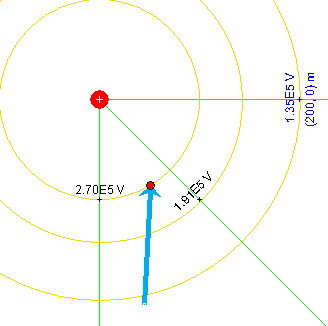
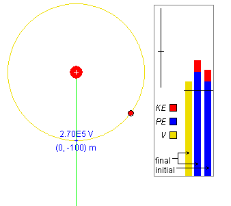

Instructions
This page is designed to get you started using the applet. The applet should be open. The step-by-step instructions on this page are to be done in the applet. You may need to toggle back and forth between instructions and applet if your screen space is limited.
 Field Lines and Equipotential
Lines
Field Lines and Equipotential
Lines
 Initial Position and
Displacement
Initial Position and
Displacement
 Potential Energy and
Electric Potential
Potential Energy and
Electric Potential

RESET  the applet.
the applet.
Exercise 1. Construct the set of green field lines and mustard-colored equipotential lines shown in Figure 1 below as follows.
Display the Grid by selecting the Grid button  . Then
select the Coordinates button
. Then
select the Coordinates button  ,
and place field point markers at
,
and place field point markers at
Each time a field point is placed, click the Field-Line button to display the green field line through the field point and the Equipotential-Line button to display the mustard-colored equipotential line through the field point. The latter is actually a circle with its center at the point source.
Then hide the Grid by clicking the Grid button again, and deselect the Coordinates button. Move the particle to (x,y) = (51, -86) m, a point on the innermost of the three equipotential circles. Hide the particle's velocity vector. The applet window should display the pattern shown in Figure 1 below.

Figure 1
Hint. You may want to hold the SHIFT key down while moving the particle to its exact position, to restrict the direction of motion to horizontal or vertical. The (x,y)-coordinates of the particle are displayed in the Data box. The motion of a field point marker can be similarly restricted.
Exercise 2. Select the Coordinates button again, move the mouse pointer to one of the existing field point markers, click on the marker and drag it.
The field line and equipotential circle through the field point should move along with the field point. Note how the value of the electric potential V at the point changes as you drag the point.
Exercise 3. Display the Vector Panel by selecting the Vectors button. Check Electric Field on the Vector Panel. Electric field vectors in green will be drawn through all field points set by you. Drag one of the field points (the Coordinates button needs to be selected to be able to drag a field point), and observe the electric field vector as the field point is varied.
Uncheck Electric Field on the Vector Panel. All electric field vectors will disappear.
Exercise 4. Deselect the Coordinates button. Then click on the source charge and drag it.
Observe how the field lines and equipotential lines through the fixed field points get re-oriented and how the coordinates of the fixed field points and the values of the potential at these points change.
The field lines remain radial lines and the equipotential circles stay concentric with the source and remain perpendicular to the field lines.
The origin of the coordinate system stays attached to the source charge, which means that the coordinates of the fixed field points have to change. You can see this clearly if you display the Grid while dragging the source.
Exercise 5. Vary the value Q of the source charge with the source charge slider. Choose both positive and negative values of Q. Observe the values of the electric potential on the equipotential curves. Which curves have the higher potential, the inner ones or the outer ones?
Display the test particle's acceleration vector. Observe the direction of the electric field by observing the test particle's acceleration. You may have to move the test particle closer to the source to get an acceleration vector of good size. When the test particle's charge is positive, the particle's acceleration is in the direction of the electric field. Does the electric potential increase or decrease in the direction of the electric field?
Answers. When the source charge is positive, the electric potential decreases from inside to outside. When the source charge is negative, it is the other way around. The electric field always points from high to low electric potential.

Exercise 1. Restore the applet to the state shown in Figure 1, reproduced once more in Figure 2 below.
Figure 2
The source charge should have the value Q = 3 mC, the three location markers with field and equipotential lines through them should be at
and the test particle should be located on the innermost equipotential circle at (x,y) = (51, -86) m.
When this is done correctly, the electric potentials on the three displayed equipotential circles should be decreasing in the outward direction from 2.70×105 V, to 1.81×105 V, to 1.35×105 V.
Exercise 2. Continue with the applet in the state shown in Figure 2 above.
Display the particle's displacement vector by selecting the
Vectors button  . This will display the Vector Panel.
Check Displacement on this panel.
. This will display the Vector Panel.
Check Displacement on this panel.
If you never clicked the Initial button  since last resetting the applet, you should see the
image shown in Figure 3 below.
since last resetting the applet, you should see the
image shown in Figure 3 below.

Figure 3
The blue displacement vector goes from the particle's default position to the particle's current position at (x,y) = (51,-87) m.
Exercise 3. Continue with the state of the applet as you left it in Exercise 2. Now click the Initial button.
The blue displacement vector should disappear. However, if you drag the particle with the mouse, the displacement vector will reappear, this time with its tail end at the location occupied by the particle when the Set-Initial-Position button was clicked, which in this case is at (x,y) = (51,-87) m.
Click the Set-Initial-Position button once more, and again drag the particle. The displacement vector should be drawn from the location where the particle was when the Set-Initial-Position button was clicked last.
Exercise 4. Continue with the applet from Exercise 3, and display the Energy box. Drag the particle again, and observe the energy column labeled "final". It gets adjusted during the dragging so that the potential energy column always represents the potential energy at the current particle position. The energy column labeled "initial" remains unchanged. It shows the particle's kinetic and potential energies at the moment the Set-Initial-Position button was clicked last.
Now click the Set-Initial-Position button, and observe the change in the "initial" energy column.
You should find that the "initial" column gets adjusted to be identical to the "final" column. The current value of the potential energy has become the new initial value.
RESET the applet. The Data and Energy boxes should be displayed automatically upon Reset.
Exercise 1. Set a location marker at (x,y) = (0, -100) m and display the electric field line and equipotential circle through this point. Move the particle to a point on the equipotential circle. See Figure 4 below.

Figure 4
The Data box (not displayed in Figure 4) shows the particle's potential energy PE in the electric field and the potential V at the particle's location. If the test particle's charge q is equal to 2 mC, you should be able to observe values close to PE = 539 J and V = 2.70×105, depending on where exactly you place the particle.
In the Energy box, the mustard-colored bar reprenting V should extend somewhat above the zero level indicated by the horizontal line across all three bars.
There are two energy columns in the Energy box, one labeled "initial", one "final". In Figure 4, the "initial" column represents the energies when the applet was reset. The "final" column represents the current energies corresponding to the moment shown in Figure 4.
Like the mustard-colored V column, the blue PE columns in both energy bars should extend somewhat above the zero level. The particle's kinetic energy, KE, is represented by the red column above the blue potential energy column.
Exercise 2. Drag the particle to points inside the equipotential circle and points outside the equipoential circle, and observe changes in the potential and in the two energy columns. Display the velocity vector.
There should be no changes in the "initial" energy column, but both the potential column and the final energy column should increase in height as you move closer to the source and decrease in height as you move away from the source. Changes in total height of the final energy column should be due entirely to changes in the potential energy portion of the column since the kinetic energy remains constant while the velocity is not being changed.
Exercise 3. Continuing from Exercise 2, adjust to the following settings:
Click the Initial button. The energy bar labeled "initial" should get adjusted to look like the bar labeled "final".
Select the Trace toggle button, and PLAY the motion. Observe the changes in the columns in the Energy box during the motion. PAUSE the motion at some point.
The particle should be moving on a hyperbolic path curving away from the source. As the particle is moving closer to the source, both its potential energy, as indicated by the blue column in the "final" energy bar, and the potential at the particle's location, as indicated by the mustard-colored bar, should be increasing. The values of these two quantities can also be observed in the Data box. These values should be decreasing when the particle is moving away from the source.
The particle's total energy should remain constant, as indicated by the fact that the "final" energy bar maintains the same total height as the "initial" bar throughout the motion. The only change during the motion is in the composition of the "final" bar: when the potential energy portion gets larger, the kinetic energy portion gets smaller, and vice versa.
Click REWIND  and then PLAY to observe this again.
and then PLAY to observe this again.
Exercise 4. Continuing from Exercise 3, click Replay. Reverse the sign of the test particle's charge so that q = -2 mC instead of q = 2 mC. Observe the change in the potential bar and the "final" energy bar.
There should be no change in the potential column, but the blue potential energy column in the "final" energy bar now should reach only to a point below the zero level, instead of above the zero level when q = 2 mC.
Click the Set-Initial-Position button, and PLAY the motion.
This time the hyperbolic trajectory will curve towards the source charge. The potential energy should be decreasing when the test particle is approaching the source and increasing when the particle is moving away from the source, just the opposite of what was the case for positive test particle charge. The electric potential should behave as before.
Exercise 5. Continuing from Exercise 4, click REPLAY. PLAY the motion again, but this time PAUSE when the test particle is closest to the source.
At this point, the bar representing V has grown beyond the height of the Energy box and the top of the "final" potential energy column has moved to a point below the bottom of the Energy box.
Now pull the Energy Zoom slider in the Energy box downward, to decrease the scale of the energy and potential bars. The top of the V-bar should come back into view and so should the top of the PE-column.
Resume the motion. If you keep the motion running, while the test particle is moving farther and farther away from the source charge, the top ends of the potential bar and of the potential energy column will approach the zero level. Move the Energy Zoom slider all the way to the top to magnify the deviation from the zero level as much as possible. When this deviation is too small to be observable in the graphical representation, you can continue to observe changes in the values of the potential and of the potential energy, as well as those of other quantities, in the Data box and in the Velocity data fields.